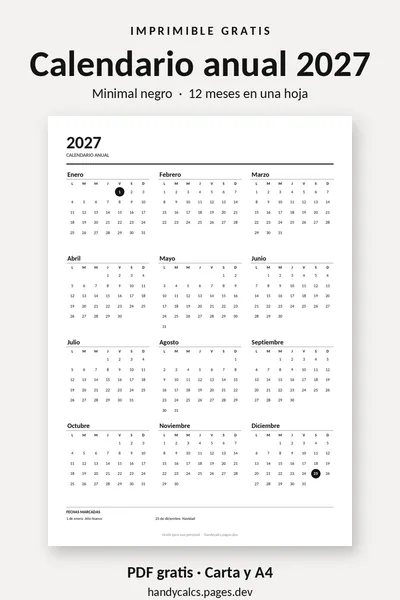
Calendario anual 2027
Los 12 meses en una sola hoja. Ideal para la heladera o el escritorio.
English version: Free Printable 2027 Calendars
Calendarios 2027 listos para imprimir en casa, en PDF y sin registrarte. Elige el estilo que más te guste: minimal negro, lino y salvia, o montaña. Todos vienen en tamaño A4 y Carta, con la semana empezando el lunes y los meses en español.

Los 12 meses en una sola hoja. Ideal para la heladera o el escritorio.
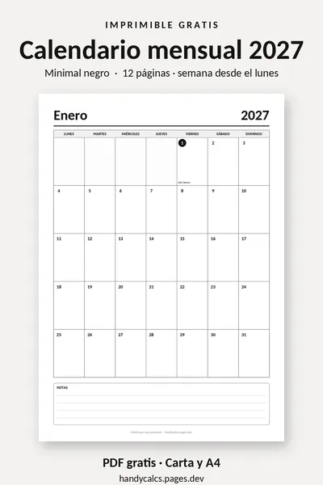
12 páginas, una por mes, con espacio para notas.
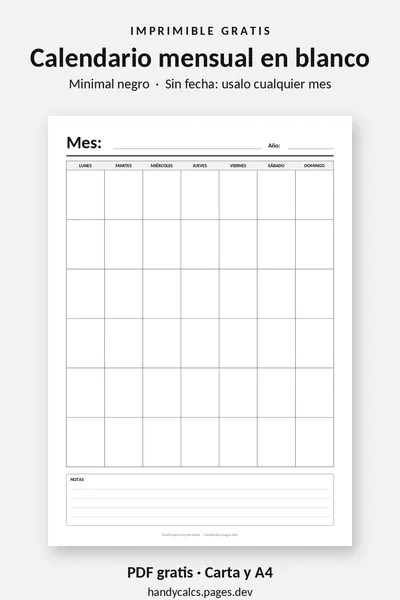
Sin fechas: escribe el mes y los números. Sirve para cualquier año.
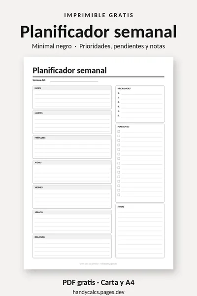
Los 7 días, prioridades, pendientes y notas en una hoja.
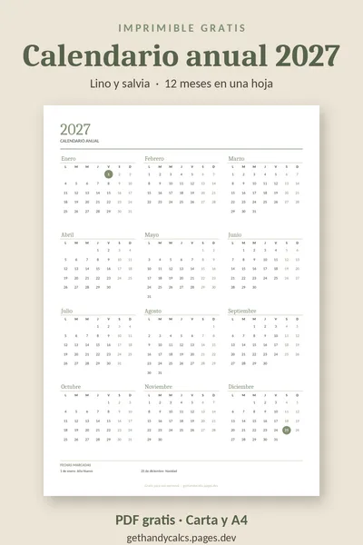
Los 12 meses en una sola hoja. Ideal para la heladera o el escritorio.
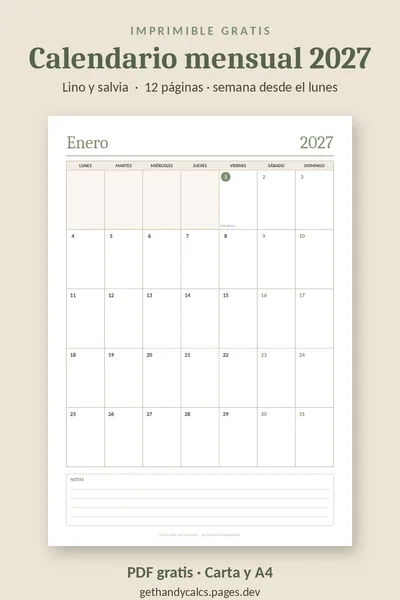
12 páginas, una por mes, con espacio para notas.
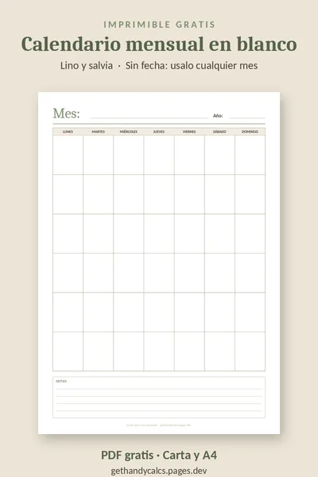
Sin fechas: escribe el mes y los números. Sirve para cualquier año.
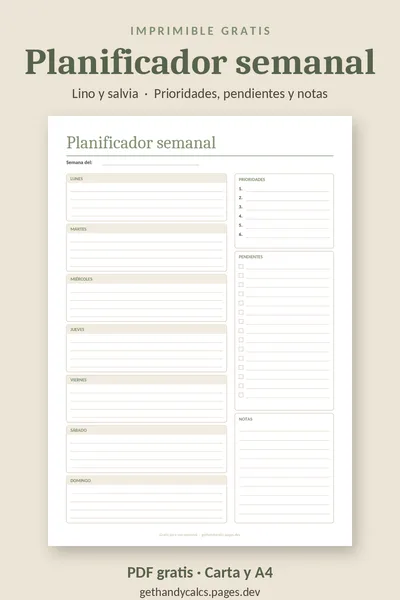
Los 7 días, prioridades, pendientes y notas en una hoja.
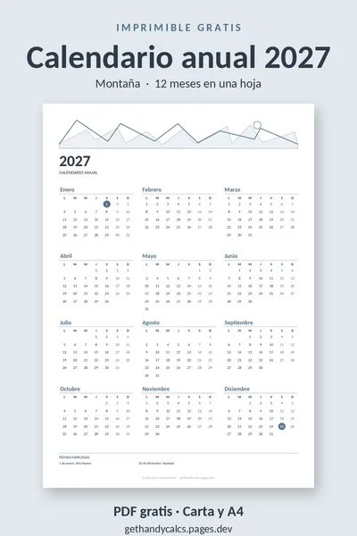
Los 12 meses en una sola hoja. Ideal para la heladera o el escritorio.
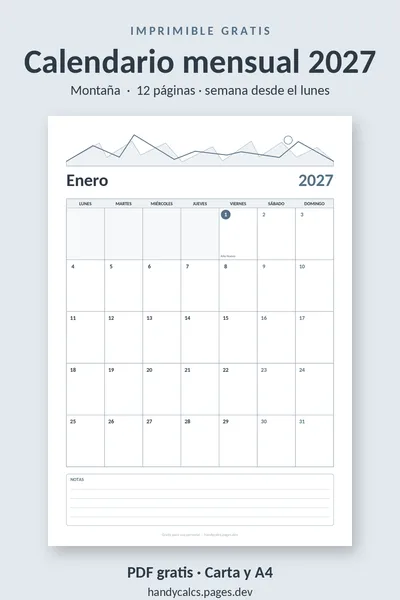
12 páginas, una por mes, con espacio para notas.
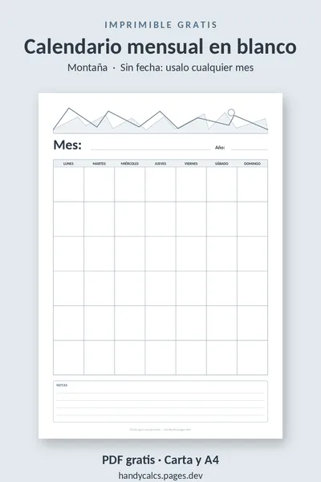
Sin fechas: escribe el mes y los números. Sirve para cualquier año.
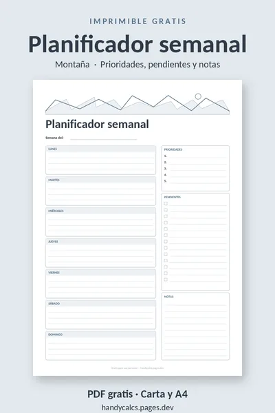
Los 7 días, prioridades, pendientes y notas en una hoja.
¿Los quieres todos? Descarga el pack completo en un solo archivo ZIP:
Sí. Puedes descargarlos e imprimirlos todas las veces que quieras para uso personal, en la escuela o en la oficina. No hace falta registrarte ni dejar tu correo.
Cada calendario viene en dos tamaños: A4 (el más común en España y gran parte de Latinoamérica) y Carta (el que se usa en México, Estados Unidos y otros países). Elige el botón que coincida con tu papel.
Abre el PDF y en las opciones de impresión elige "Tamaño real" o escala al 100%. Si tu impresora corta los bordes, usa "Ajustar al área de impresión".
En la versión en español la semana empieza el lunes. La versión en inglés empieza el domingo y marca los feriados federales de Estados Unidos.
La versión en español solo marca el 1 de enero y el 25 de diciembre, porque los feriados cambian según el país. Te dejamos espacio para anotar los de tu país.
Puedes compartir el enlace a esta página todas las veces que quieras. Lo que no se permite es vender los archivos o subirlos a otro sitio.